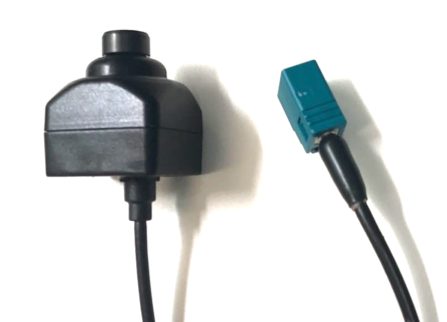

Guide for Wissen Camera¶
Wissen’s camera is a joint development venture product of Wissen Technologies and Baidu. This line of camera features high dynamic range (HDR 120dB), internal/external trigger and OTA firmware update. It is well supported by the Apollo Sensor Unit. This line of product is based on AR230 sensor (1080P) and AP0202 ISP from ON Semiconductor.
We recommend using three cameras, two with 6 mm lens and one with 25 mm lens to achieve the required performance for the traffic light detection application.

This camera can be connected to the Apollo Sensor Unit via the FAKRA connector for data transfer, trigger and OTA firmware update.
Disclaimer¶
This device is Apollo Hardware Development Platform Supported